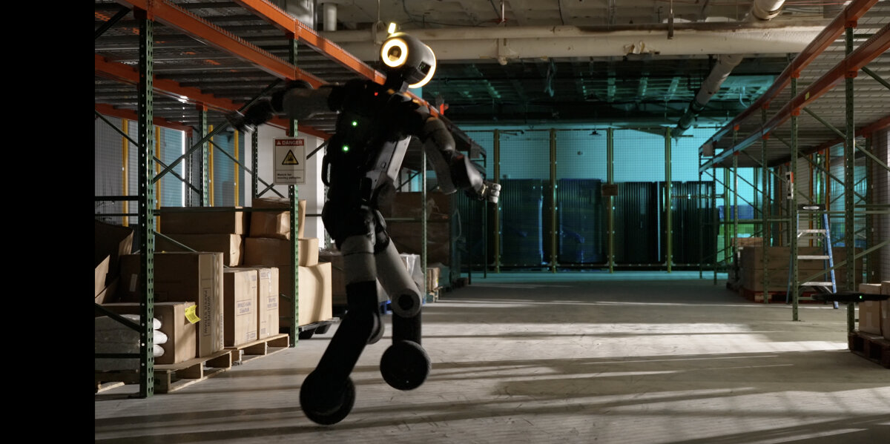

Инженеры Boston Dynamics заменили Atlas ступни на колёса: через специальный адаптер к актуаторам голеностопа приладили обычные самокатные диски. Никакой другой переделки не понадобилось — благо Atlas модульный, и по затратам работы были сопоставимы с заменой колеса у велосипеда, отмечает компания в блоге «Atlas On a Roll».
Коммерческой версии «атласа на роликах» не будет. Это экспериментальная площадка: колёса заставляют актуаторы ног на высокой скорости давать большие обороты и крутящий момент при разгонах, поворотах и резких остановках — так проверяют их запас прочности. Полученные данные уже идут в серийный Atlas, а следующий шаг — проверить, как система управления поведёт себя при отказе части актуаторов.
Колёса добавили и в симуляцию, где через обучение с подкреплением Atlas осваивал новый способ передвижения. Чтобы виртуальная модель не расходилась с железом, поведение актуаторов отдельно обмеряли в физических экспериментах и подстраивали параметры симуляции. Для плавности переделали награду в RL-фреймворке, а часть движений робот перенял с захвата движений живых людей — например, боковые перемещения, которые на роликах без «ножниц» конькобежца не делаются.
Отдельный трюк — прыжок с вращением на 360°. Контроллер тренировали на записанных человеческих прыжках, и роботу хватило одной попытки на реальном железе. В компании такой трюк считают низкорисковым: управление всего лишь следует проверенной человеческой траектории.
Кстати, первопроходцами на роликах гуманоиды быть перестали: ещё весной экспериментальные версии Unitree G1 уже ездили на колёсных приставках.